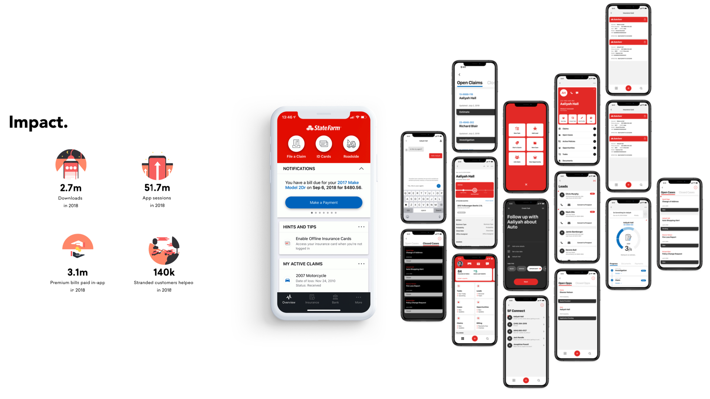

Insurtech disruptors like Lemonade were rewriting what customers expected from their carrier. State Farm needed to shift from selling products to offering self-services people could control from their phone. As Design Lead, I drove research and strategy for AI-assisted claims handling with the Becky system.
Insurtech disruptors like Lemonade were resetting expectations — instant claims, full transparency, all in-app.
Agents spent hours guiding drivers through tedious filing — tasks ripe for AI automation.
Customers wanted to be informed, proactive, and in control — not on hold.
Filing a claim is tedious — and it overwhelms State Farm's call centers. The opportunity: use AI to automate the predictable while preserving a human touch where it counts. As Design Lead, I owned discovery, facilitated a future-vision workshop, and synthesized the work into a service blueprint that became the strategic roadmap.
